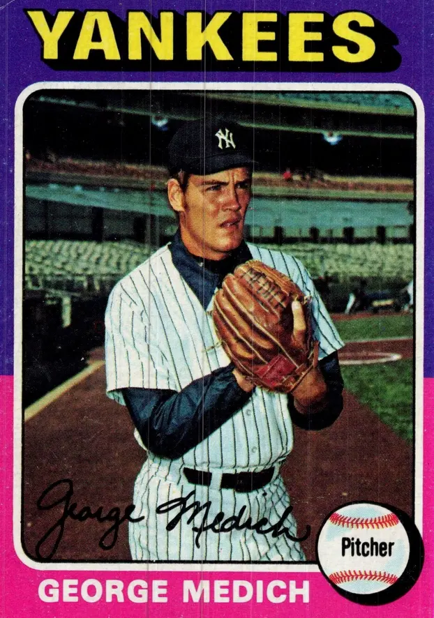

George Medich "Doc"
Career Highlights & Facts
(Facts are AI-generated and may require verification)
- Earned a nickname reflecting a pursuit of a medical degree while actively competing in the major leagues.
- Selected in the 30th round of the amateur draft.
- Involved in a high-profile trade that brought a future legendary second baseman to a storied club.
Would you like to find out more about George Medich?
Read Player Biography
Wikipedia Summary:
George Francis "Doc" Medich is an American former professional baseball player who pitched in the Major Leagues from 1972 to 1982. He was a medical student at the University of Pittsburgh School of Medicine, and acquired the nickname "Doc" during his early baseball career.
Career Totals
| WAR | W | L | ERA | G | GS | SV | IP | SO | WHIP |
|---|---|---|---|---|---|---|---|---|---|
| 19.6 | 124 | 105 | 3.78 | 312 | 287 | 2 | 1996.2 | 955 | 1.332 |
Statistics via Baseball-Reference.com
The Original Clue